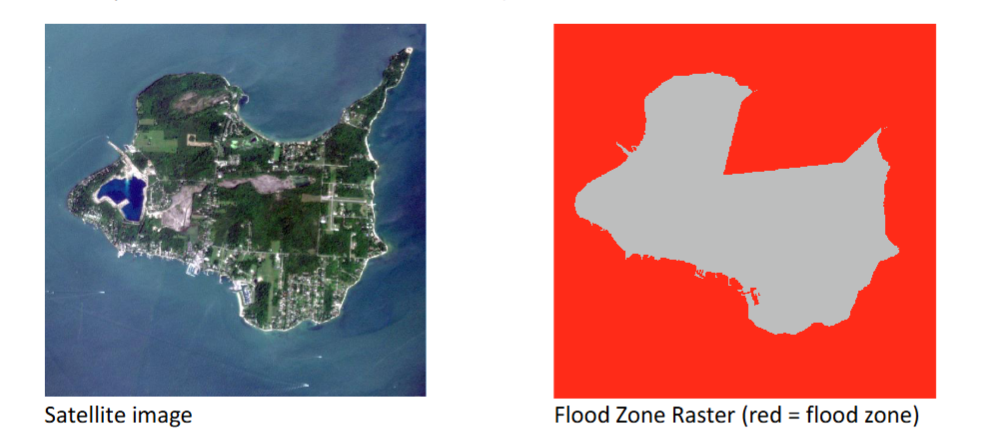

Image segmentation and Classification
Introduction
The project consists of conducting a supervised and knowledge-based land cover classification of a sample of satellite imagery. An object-based image analysis (OBIA) approach is used in the initial steps, applying spectral and spatial attributes to segment and classify the land cover using eCognition.
Study Area and Data
Kelleys Island, located in the United States, serves as the study area for this analysis. The datasets used include:
Planet Dove Satellite Image (3m resolution, 4 bands: Blue, Green, Red, Near-Infrared), providing detailed spectral information for classification.
Flood Zone Raster (3m resolution, binary values: 1 = potential flood zone, 0 = no flood zone), used for knowledge-based classification to refine land cover identification.

Supervised Classification
Image segmentation
Why Image Segmentation? Segmentation is required for clustering pixels into significant objects in order to facilitate a more structured classification process. Segmentation considers spatial context, unlike pixel-based classification, and is therefore particularly useful for delineating complex land cover types.
To produce meaningful image objects, a Multiresolution Segmentation algorithm within eCogniton was employed. A scale parameter of 150 was set such that resulting segments are not too small nor too large, finding a compromise between detail preservation and efficiency in classification. This segmentation was key in distinguishing between land cover classes, dividing the image/scene into objects based on their spectral value, shape and compactness.

Sample-based Image classification
Why Sample-Based Classification? Supervised classification applies training data to develop a model that can generalize to unseen areas. By selecting representative samples, we ensure the classification model is able to separate land cover categories effectively.
A supervised classification method was utilized, and a selection of representative samples for the major land cover categories were needed:Water, Grassland, Forest, Bare Soil, and Impervious Surfaces (streets, buildings, etc.)
The classification used mean spectral values from the image bands to separate classes. Training was done using a Support Vector Machine (SVM), iteratively refining the classification by adjusting training samples and re-running the classification.

Knowledge-Based Classification
Why Knowledge-Based Classification? Supervised classification incorrectly classifies some regions and provides only a broad classification. Knowledge-based classification applies expert rules and other data sources to limit the results, hence improving overall accuracy.
Whereas the first classification provided a general class of land cover, expert knowledge was incorporated to provide more detail results. Two new classes were incorporated:
Forest_Flooded: Areas classified as forest that overlap with flood-prone zones.
Lake: A subclass of water, distinguishing inland water bodies from surrounding waters.
Applying Expert Rules
The Assign Class algorithm was used to identify and classify Forest_Flooded areas. This rule-based classification ensured that any forest object intersecting flood-prone zones (value = 1 in the flood zone raster) was correctly labeled.

Similarly, in order to classify Lake areas correctly, the Find Enclosed by Class algorithm was used. The algorithm could successfully find inland water bodies based on geometric properties, which ensured water bodies within the island were well classified.

Post-Processing
To further improve results, the Merge Region algorithm was used to combine fragmented water objects into one object, ensuring precise representation of the lake class.

The final knowledge-based classification incorporated these enhancements, yielding a better land cover representation.

High-Level Segmentation
Why High-Level Segmentation? High-level segmentation allows for analysis at a broader scale, grouping larger regions to gain insights into overall land cover patterns.
To further analyze the island at a broader level, a new segmentation level was introduced. The goal was to segment the entire island as a single object, allowing for higher-level classification and analysis.
Coarse-Level Segmentation
A second segmentation was also performed using only the spectral bands, increasing the scale parameter significantly to encompass the entire island as a single object. Several iterations were performed to fine-tune the scale so that the island would be segmented as a single unit without fragmentation.

The result successfully separated the island as a single object, demonstrating how various scales of segmentation can be used for various analysis purposes.

Conclusion
This project applied a systematic process to land cover classification, combining supervised and knowledge-based methods to eCognition. The processing methodology emphasized segmentation, feature selection, and interactive optimization as a critical component to providing useful classification. Adding knowledge enhanced the following classification even further, with more accurate and insightful land cover for Kelleys Island. High-level segmentation with resulting maps provided the analysis with a macro level, with possibilities of larger regional analysis as well as ongoing spatial assessment.